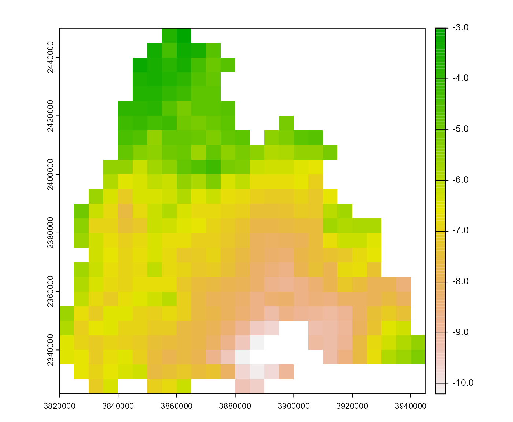

The package comes with sample data that allow the application of all models available. The following data sets are available:
Value
The respective data set. Can be a list of SpatRasters (for
dataset = 'raster') or a data frame.
Details
rasterContains a list of raster weather datasets for a sample area. The data was taken from Deutscher Wetterdienst (DWD).stationsContains sample station weather data for some cities in Germany. The data was taken from Deutscher Wetterdienst (DWD). Missing global radiation values were replaced by the mean value of the other stations.station_coordsContains the coordinates (longitude/latitude) of the stations that are included in thestationsdata set. The data was taken from Deutscher Wetterdienst (DWD).
Examples
# \donttest{
# plot first layer of the minimum temperature of the sample raster data
terra::plot(barrks_data()$tmin[[1]])

# print the first lines of the sample station data
head(barrks_data('stations'), 10)
#> # A tibble: 10 × 9
#> date station tmean tmin tmax rad sunrise sunset daylength
#> <date> <chr> <dbl> <dbl> <dbl> <dbl> <dbl> <dbl> <dbl>
#> 1 2011-01-01 Freiburg 0.1 -0.4 0.7 228. 499 1006 8.45
#> 2 2011-01-02 Freiburg -0.1 -3.4 2.2 642. 499 1007 8.47
#> 3 2011-01-03 Freiburg -3.4 -8.4 0.3 1708. 499 1008 8.48
#> 4 2011-01-04 Freiburg -3.7 -7.6 -1.4 1194. 499 1009 8.5
#> 5 2011-01-05 Freiburg -2.2 -6.5 2.4 1639. 499 1010 8.52
#> 6 2011-01-06 Freiburg 7.8 -2.6 12.8 356. 499 1011 8.53
#> 7 2011-01-07 Freiburg 11.5 9.1 14.9 336. 498 1012 8.57
#> 8 2011-01-08 Freiburg 12.8 7.7 16.2 736. 498 1013 8.58
#> 9 2011-01-09 Freiburg 8.7 4 13.3 169. 498 1015 8.62
#> 10 2011-01-10 Freiburg 2.9 1.9 4.1 397. 497 1016 8.65
# print the coordinates of the sample stations
barrks_data('station_coords')
#> # A tibble: 4 × 3
#> station lon lat
#> <chr> <dbl> <dbl>
#> 1 Freiburg 7.83 48.0
#> 2 Mannheim 8.56 49.5
#> 3 Konstanz 9.13 47.7
#> 4 Stuttgart 9.2 48.8
# }